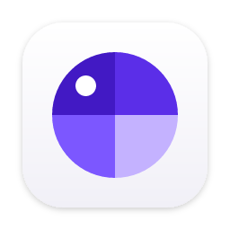
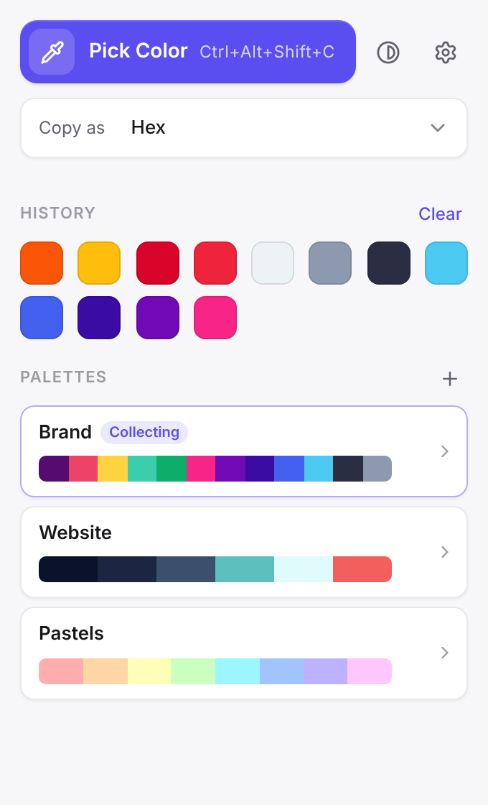
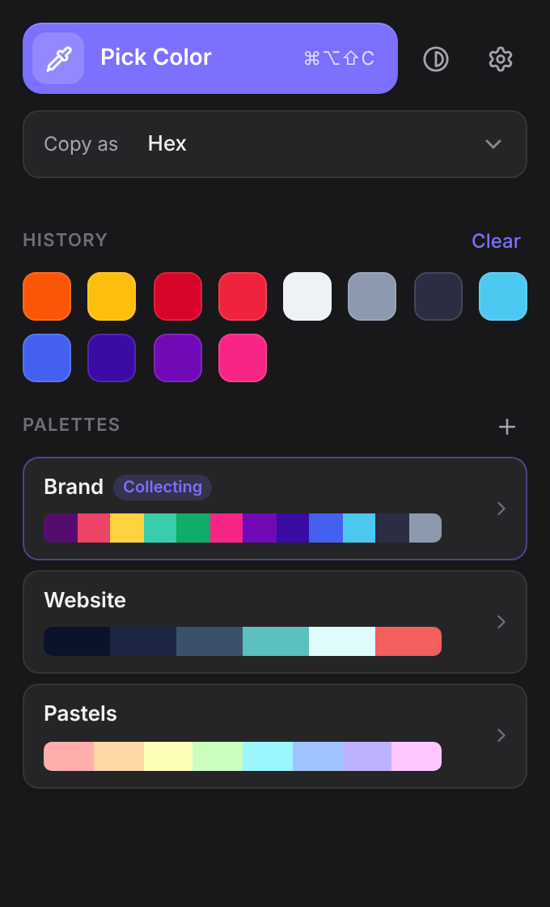
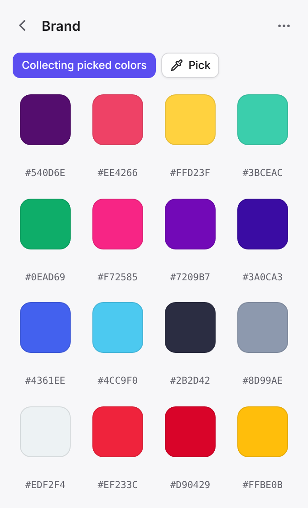
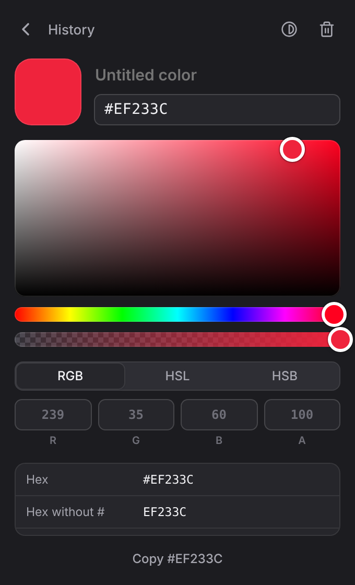
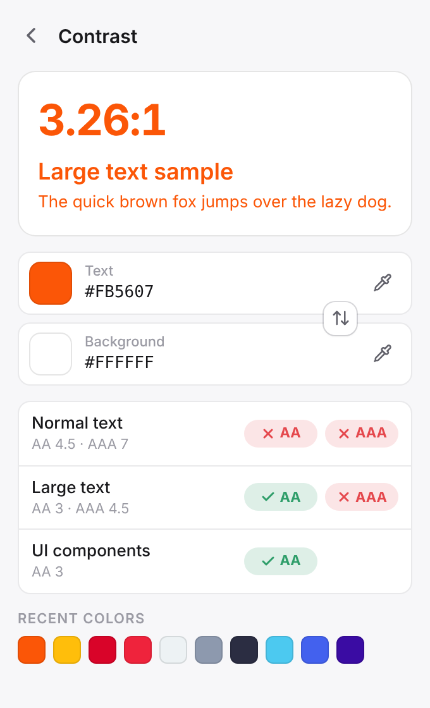
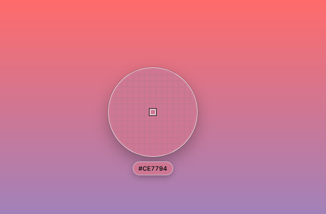

Pixel-precise loupe
Zoomed pixel grid, arrow keys for 1 px steps, works across all displays and HiDPI screens.

ChipDeckChipDeck lives in your menu bar or system tray. Press a shortcut, aim the loupe, click – the color is in your clipboard in exactly the format you need.
Free download · 9.99 in the stores to support development · no account

Designed to stay out of your way: one shortcut, one click, and you are back in your design tool or code editor.
Zoomed pixel grid, arrow keys for 1 px steps, works across all displays and HiDPI screens.
Every pick is saved. Organize colors into palettes with drag and drop and export them.
CSS Hex, RGB, HSL, OKLCH, SwiftUI, UIColor, NSColor, Android, Compose, Flutter, .NET, Java and more.
WCAG 2 contrast ratio with AA and AAA results for text and UI components.
Fine-tune any color with sliders or exact RGB, HSL and HSB values, including opacity.
No account, no tracking, no network access. Your colors stay on your computer.
A compact window next to your menu bar or tray icon, ready whenever you need it.





Start picking from any app with a global shortcut you can change in the settings.